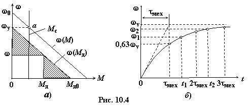

Зависимость ω(t) привода определим при условии, что динамический момент является линейной функцией угловой частоты ω. Такие условия создаются при пуске асинхронного двигателя с фазным ротором и двигателей постоянного тока независимого возбуждения, если Мc = const. На рис. 10.4а для этого случая приведены механические характеристики двигателя ω(М) и привода ω(Мc). На основании заштрихованных треугольников запишем уравнение для динамического момента
 откуда
откуда
откуда где Мд0 – динамический момент при пуске привода; ωу – угловая частота в установившемся режиме.

Подставив выражение для Мд в уравнение движения
, получим или 
где τмех = Jωу / Mд0 – электромеханическая постоянная времени; интервал времени, за который возросла бы угловая частота вращения от нуля до ωу, если бы начальный динамический пусковой момент Мд0 сохранился постоянным до конца пуска.
Решением неоднородного дифференциального уравнения (10.6) является выражение
Решением неоднородного дифференциального уравнения (10.6) является выражение
),
из которого следует, что за время τмех угловая частота возрастёт до 0,63ωу, а за время 3τмех – до 0,95ωу (рис. 10.4б).
Выражение (10.7) можно интерпретировать также следующим образом: отклонение от установившейся угловой частоты ωу уменьшается (увеличивается) экспоненциально с постоянной времени τмех, а время, например, возрастания угловой частоты от ω1 до ω2 (см. рис. 10.4б) можно рассчитать из следующей зависимости:
откуда
Нетрудно установить связь времени
пуска с электромеханической постоянной вемени τмех привода с принятыми линейными зависимостями моментов до номинальной частоты ωн между τп.н и τмех. Если, например, у асинхронного двигателя, работающего с номинальной нагрузкой и имеющего угловую частоту ωн, внезапно снять нагрузку, то он разгонится до частоты ω0 (см. рис. 10.4а) под
действием ускоряющего момента Мн. Ввиду того, что равные моменты ускоряют равные массы, отношение времён совпадает с отношением угловых частот, т.е.
откуда
где Sн – номинальное скольжение асинхронного двигателя; tп.н = Jω0/Мн – время пуска привода, рассчитанное для угловой частоты ω0 холостого хода.